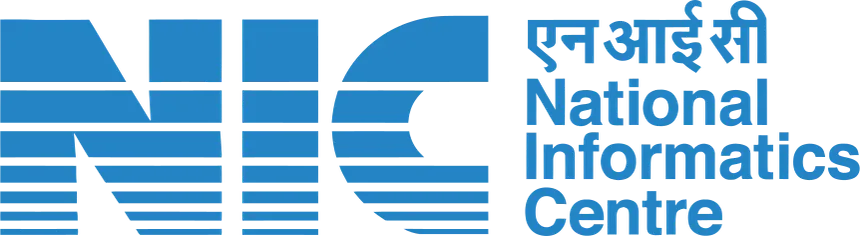
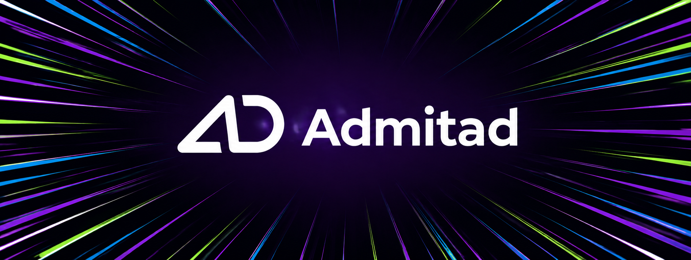

I understand how businesses create value
I read a company by asking what actually drives its numbers — how it makes money, where it spends, and what would have to change for either to get better or worse.
Below is the actual work — financial models I've built, case studies I've written, and the internships that led here. I put this site together myself, and I keep it updated myself.
Add images/photo.jpg to replace this placeholder.
It started with a simple question — why some businesses compound and others don't — and turned into a habit of building models and writing them up in public. I'm still finishing my degree in Data Science, which is mostly an excuse to keep one foot in code while the other stays in a spreadsheet.
Everything here sits in that overlap: I do the financial analysis properly, then use what I know about code to actually build the thing the analysis points to — a model, an automation, a small tool.
The pattern that shows up across the experience, models, and writing on this page.
I read a company by asking what actually drives its numbers — how it makes money, where it spends, and what would have to change for either to get better or worse.
Once I understand a business, I build something with that understanding — a financial model, an automation, a prototype. I don't just write it up and move on.
I write up what I find and publish it under my own name on LinkedIn. Anyone can check whether the thinking holds up — I'm not just telling you I can do this.
Three internships — public sector, sales, and software engineering — each one different from the last.

NIC Jul 2025 – Aug 2025Intern, Tourism Ministry (Govt. of India)

AI Jun 2025 – Aug 2025Business Development Intern, Sales
Junior Software Engineer Intern, Web Development
B.Tech, Computer Science Engineering — Data Science
High School, CBSE Board
Six independent case studies — each one paired with the full write-up and, where built, the underlying financial model.
Case studies I publish on LinkedIn — I pick a real company or deal and dig into the numbers, instead of posting a one-line take. Each entry links back to where I first published it.
Alongside the finance work, I still write code — mostly Python and automation, plus whatever a fintech product actually needs to ship.
I'm most interested in roles where I'd actually get to analyze a business and build something — not just one or the other.